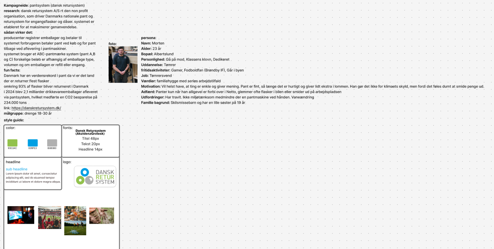
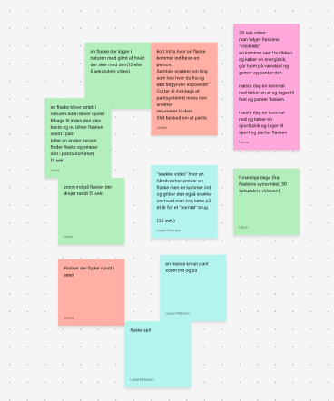
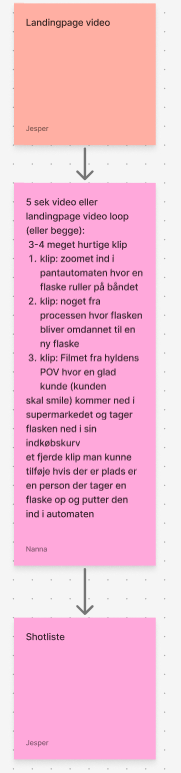
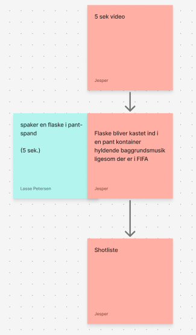
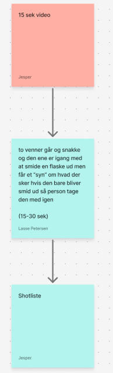
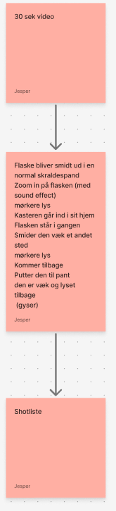
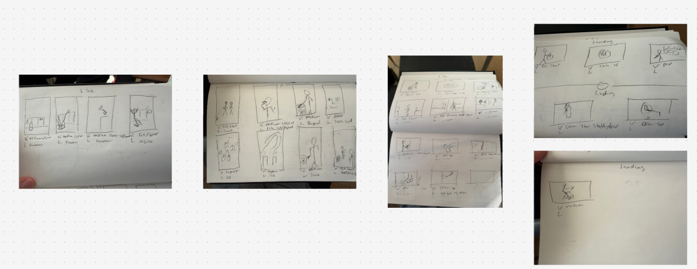
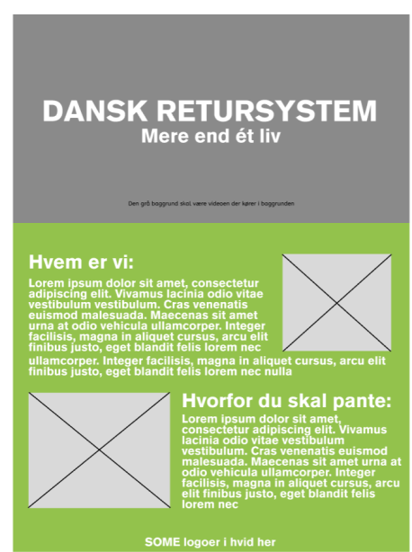

Flow 4 – Kampagne på tværs af platforme
Flow 4 bestod af at udvikle en komplet videokampagne og en landing page for en virksomhed, der arbejder med cirkulær økonomi. Kampagnen skulle leve på sociale medier i tre videolængder (5 sek., 15 sek. og 30 sek.) samt en landingpage-video. Vi arbejdede i OLA'er og kom igennem research, persona, styleguide, idéudvikling, storyboard og test.
Virksomhed & Research
Vi valgte Dansk Retursystem, som driver Danmarks nationale pantsystem. Al research pegede på et massivt fokus på genanvendelse, effektiv infrastruktur og stærk branding af cirkulær økonomi. Målgruppen blev defineret som unge mænd 18–30 år, der ofte handler hurtigt og spontant – og hvor pant skal være nemt og give mening i hverdagen. For at styrke kampagnens retning udviklede vi en persona baseret på målgruppeanalysen. Den repræsenterede en ung, travl forbruger, der pantes af praktiske grunde og sjældent tænker over bæredygtighed. Kampagnens visuelle stil tog udgangspunkt i Dansk Retursystems farver, rene grafiske elementer og korte statement-budskaber. Styleguiden sikrede konsistens på tværs af video og landingpage.

Scrappede videoideer
I idéfasen producerede vi en række forslag, som enten blev for lange, for komplekse eller ikke ramte målgruppen tydeligt nok. De blev dokumenteret som en del af processen.

Endelige videoideer
De endelige koncepter blev skåret ind til benet: hurtige, klare, visuelt stærke fortællinger med høj genkendelse og tydeligt pantbudskab.




Storyboard
Vi udarbejdede storyboard for alle fire videoer: landingpage-video, 5 sek., 15 sek. og 30 sek. Storyboardet visualiserede flow, perspektiv, grafiske overlays og budskab.

Wireframe – Landing page
Landingpagen blev planlagt med en video som hero-element, efterfulgt af tekst om Dansk Retursystem og klar forklaring af pantens værdi. Wireframen lagde grundstrukturen for den færdige løsning.

Resultat
Det færdige flow resulterede i fire videoer og en landingpage, alle i et ensartet visuelt udtryk og målrettet de sociale medier. Kampagnen kommunikerer pantens værdi gennem hurtige klip, klare pointer og en let, genkendelig grafisk stil.
Hvad jeg lærte
Jeg fik praktisk erfaring med videoproduktion, storyboard, målgruppedrevet kommunikation gennem SoMe-videoer, samarbejde i OLA'er og udvikling af landingpages med konsistent visuelt udtryk. Flowet trænede både konceptudvikling, test og struktureret aflevering.